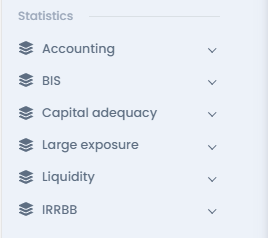
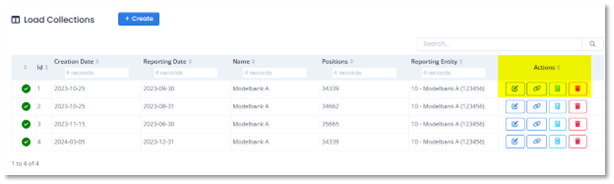
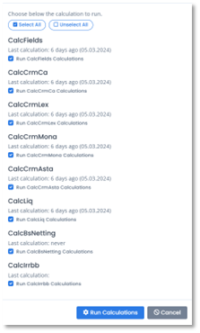
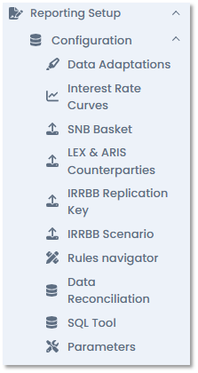
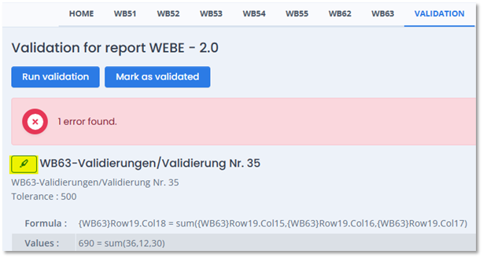

User Guide - Step by step
1.1. General settings
As a first step the user must complete some business configuration files. All these files are normally stored in the configuration folder of Mercury and available in the application under a specific menu.
1.1.1. Adaptations.csv
It contains all the rules needed to correct the input data. In application the menu Reporting setup / Configuration gives acces to the related table.
In the "Actions" part of the menu you can Edit, Apply, Test and Delete each rule
The adaptation rule can be enabled or disabled directly in the related column in the table.
1.1.2. BookingCenters.csv
Definition: Entity owning the reported data The reporting perimeter is defined in this file. In the application under the menu Reporting setup / Reporting Management the information are visibile and editable.
Definitions: - Id = Unique booking center identifier. - CreationDate = Date at which the record was created or modified. - Name = Name of the booking center. - OfficeType = Delivers the office type from the perspective of the entity higher in the structure of the bank. For instance, if an entity is a subsidiary of its mother entity and the head office on another one, deliver Subsidiary. Information used for consolidation. - OfficeCountry = ISO 3166 2-letters country code of the location of the reporting entity. - OfficeCanton = For Swiss reporting entities, 2-letter code of the canton of location. - OwnerI = Largest owner. Used for consolidation level.
1.1.3. ReportingSets.csv
Definition: Sets of data for the Reporting Entity and the linked Booking Centers
This is used to link all BookingCenters together for a Reporting Entity and the Office Type in the consolidation Perimeter. In the menu Reporting Setup / Reporting Management the information are visibile and editable.
Definitions:
-
Id = Unique Reporting Set identifier
-
CreationDate = Date at which the record was created or modified
-
ReportingEntity = Existing Reporting Entity Identifier.
-
BookingCenter = Existing Booking Center Identifier
-
OfficeCountry = Country to consider in the BookingCenter-ReportingEntity link
-
OfficeType = Office Type to consider in the BookingCenter-ReportingEntity link
All these files are read by the application during the import of the data.
Attention: when an update is made in the .csv files we need to reload them using the menu "LoadAll" (located in the "AccesKitchen" part (see point 1.2.4.).
In general, the following behaviors are applied during the Load All process:
-
BookingCenter, ReportingEntity et ReportingSet: we keep without updating existing entries and add the new ones coming from the input file.
-
Adaptation, InterestRateCurve, MsaQuery, Netting : we replace the entries with the same ID and add new ones.
-
Parameter => We replace existing entries, but keep the already set parameter Value
On the other hand, if an update made in the application need to be reported in the .csv file the "SaveAll" option should be run.

1.1.4. ReportingEntities.csv
Definition: Entities of the bank which need to produce reports.
All the reporting entities used in the legal reporting's perimeter are reported here with all the needed information (SNB code, FINMA's category, master data, etc). In the menu Reporting Setup / Reporting Management the information are visibile and editable.
Definitions:
-
FinmaCategory = FINMA category
-
ConsoLevelGroup (TRUE/FALSE) = Is the entity doing a reporting at the consolidation level group?
-
ConsoLevelParentCompany (TRUE/FALSE) = Is the entity doing a reporting at the consolidation level parent company?
-
ConsoLevelBankOffice (TRUE/FALSE) = Is the entity doing a reporting at the consolidation level bank office?
-
StreetName = Street name of reporting entity's adress.
-
StreetNumber = Street number of reporting entity's adress.
-
PostBox = Post box of the reporting entity's adress.
-
ZipCode = Zip code of the reporting entity's adress.
-
City = City of the reporting entity's adress.
-
ContactName = Person of contact.
1.2. Navigation through the application
1.2.1. Statistics

All the legal reports and the related workingpapers are accessible on this menu grouped by topics.
-
Accounting (MONA, MIRE, WB, AU, G101, B001, KRED, KWERA)
-
BIS (EURO2, ASTA2)
-
Capital adequacy (Credit Risk, Market Risk)
-
Large Exposure (LER, LER20, ARIS)
-
Liquidity (LCR, NSFR, LMT)
-
IRRBB (ZIR)
1.2.2. Tools
Contains the following sub-menus:

Loads management
Data Loads Import of the data, checks and the changse of the input data (core_positions table) are available under this menu.
The import part allow the user to import a new data loads (Import button) or overwrite an existing Data Load or add (merge) new data to an existing Data Load by using the up arrow icon on the Actions options part.
Moreover the user can choose to upload multiple files (the files must be stored in the same folder).
Loads Collections

Under this menu, in the Actions part, you can:
Add the relevant Reporting Entity
Link different data loads
Perform all the calculations.

Reporting setup
This menu is splitted in two parts: Configuration and Reporting Management.
Configuration
This menu contains a series of sub-menus with a range of useful features to make life easier for users.

Data Adaptations
As described an point 1.1.1 this menu can be filled via the .csv file in the config folder or using the table in the interface. (see point 1.1.1 for more details)
Interest Rate Curves Here the interest rate curves used to compute the IRRBB calculations are available and can be uploaded via a .csv file. (Mercury's table: ts_interest_rate_curve)
SNB Basket
The official list (https://www.snb.ch/en/the-snb/mandates-goals/monetary-policy/implementation/repo-payments-transactions) of the collaterals eligibile fro SNB repos should be uploaded here for each data load.
LEX & ARIS Counterparties
The list of couterparties for Large Exposure (LEX) or Aris scope can be uploaded here.
Format of the document is .csv.
Important Note: the PointInTime column (second value) must be updated at the time of loading to correspond to the LoadId in which the data is located (this information can be found in the "Data loads" menu).
IRRBB Replication Key Replication keys are used to model positions without maturity in the context of interest rate risk and are constructed using two dimensions: the positions to which the rules are applied (Rules) and the time buckets (Splits) into which the amounts are to be allocated.
A set of standard replication keys are provided in Mercury but users can create and apply new ones according to their internal policies directly in this menu.
Note: The time buckets (1-19) are pre-established according to regulation (FINMA Circ. 2019/2 Annexe 2)
IRRBB Replication Scenario The six standard scenarios (per currency) described in the FINMA Circulare (2019/2 Annexe 2) are contained in Mercury and visible in this menu. The user can create or import other scenarios using the dedicated menu in the interface.
Rules navigator
All the table containing the rules and parameters determining the calc_fields in the related tables are stored under this menu grouped by topic.
The select menu on the top right part of the screen helps the user by facilitating the search for available rules by entering key words.
Data Reconciliation
This menu allow the user to check data from a series of given table of our datamodel. Additional parameters to filter the results have to be entered in the where part of the menu.
(ex. the LoadId of the group of data we want to investigate)
SQL Tool
Quick and direct data searches can be made from this menu using a SQL language.
Parameters
List of the customizable parameters available in the application and characteristics are stored here.
(Mercury's table: param_parameters)
Reporting Management
The general settings described at point 1.1 are available and editable in the application here.
Booking Centers
Reporting Sets
Reporting Entities
Consolidation
A summary diagram of how the consolidated data (group and reporting entities structure) are treated is available here.
Pledges
1.3. From data loading to report producing
1.3.1. Data loading
The importing of the data is performed from the menu Tools / Loads Management / Data Loads using the icon IMPORT.
-
Enter the reporting data
-
Enter a name for the Data Load (Note: the reporting data will be displayed as the begin of your Data Load name)
-
Choose among the following options how the data group you are importing will be treated
-
Select the file you want to import
-
Click the Submit button
It is possible to view and verify ongoing processes by navigating to the Notifications menu
or by selecting the "See current logs" option under the suitcase icon
1.3.2. Fields calculations
Once the data have been imported, the calculations of the fields must be triggered via the menu Loads Management / Load Collections, by clicking the Calculate fields icon in the Actions for the choosen Data Load.
As per the previous menu you can see the processus and the technical results in the Logging actions area or in the Notifications menu .
1.3.3. Reports calculation
After selecting a report and choosing a data set, the calculation must be launched with the Calculate icon.
Note: The icon is orange and there are no reports available before starting the calculation.
Once the calculations have been completed (you can check the technical results in the Notifications menu), the reports are visible.
Variation Reporting This menu allows to compare figures and their variations between two periods. Simply by enabling the option, choosing the Load to compare with, adjusting the Absolute and Relative thresold range. Once the option is enabled, the calucation must be launched and the results will be visible on each report of the survey.
Toggle absolute variance: by activating this option, the delta between the amounts of the two selected periods is shown in absolute value.
1.3.4. Reports validation
Validation can be run, once the reports have been calculated, via the dedicated menu.
The validation rules are those provided by BNS for the specific report.
In the case of warning or error messages, the affected report(s) and cell(s) can be highlighted by clicking on the highlighter symbol at the side of the descriptive message of the warning/error.


1.3.5. Reports export
The reports can be exported in XML format using the icon Export XML in the home page of each survey.
The XML-generated file can then be transmitted to the relevant supervisory authorities (SNB or FINMA) through the agreed channels.